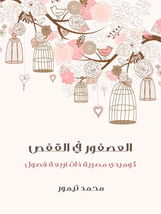

العصفور في القفص: كوميدي مصرية ذات أربعة فصول

قراءة عربية أصلية محددة النطاق في الصفحات 9 إلى 14 من ملف PDF المرتبط، وليست تلخيصا كاملا للكتاب. نناقش ما تدعمه هذه المقاطع فقط.
عزيزة هانم ومرجريت وفريوز أغا: صراع البيت
تُعرض أشخاص الكوميديا: محمد باشا الزفتاوي أحد باشوات الريف، وابنه حسن بك الطالب الثانوي، وأمين بك ابن عمه مثال الوارث المسرف، ومحمود بك ابن خالته طالب الحقوق، وفريوز أغا أغا السراي، وعزيزة هانم زوجة الباشا، ومرجريت الخادمة السورية. وفي الفصل الأول تُرفع الستارة على صالة في منزل الباشا أثاثها مذهب فاخر وُضع بغير نظام، والساعة الثالثة بعد ظهر يوم جمعة، ومرجريت ترتب بعض الأواني الصغيرة بجوار المرآة. تدخل عزيزة هانم فتعاتبها بالعامية المصرية: بدل سيدك الباشا سيباهم يرنم في الدولاب، أنا موش قلت لك ميت مرة إنك تمسحي البقع اللي فيهم. ترد مرجريت أنها مسحتهم الصبح، فتقول عزيزة إن البدل موجودين في الدولاب والبنزين عندك وليه الكسل ده، فتجيب الخادمة أن قزازة البنزين فرغت من شهر وكل ما تقول يشتروا غيرها ما بيريدوش، وقد اضطرت أن تشتري هي شوية، فتنهاها الهانم عن ذلك وتأمرها أن تطلب منها الفلوس. وحين تخرج تدخل فريوز أغا ينظر إلى مرجريت نظرة إعجاب ويبتسم، فتذعر منه: مني انت؟ خضيتني يا باش أغا، فيرد: برضو إخص عليك، برضو كده، ويأخذ في مغازلتها.
زاوية وحدود القراءة
قراءة موجزة من ص ٩ إلى ص ١٤ من أصل ٨٢ صفحة، تعرض مطلع الفصل الأول، لا المسرحية كاملة.
الطبعة والقراءة
هذه النسخة من الكتاب صادرة ومتاحة مجانًا من مؤسسة هنداوي بشكل قانوني؛ حيث إن نص الكتاب يقع في نطاق الملكية العامة تبعًا لقوانين الملكية الفكرية.
تنزيل PDF المجاني ↓ القراءة والمصدر الرسمي ↗